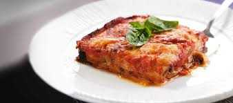

The Adventurist
Although Italy is more commonly associated with pizza, pasta, and a ridiculous amount of wine, believe it or not, there are various adventurous activities that you can do.
Having traveled to different parts of Italy in various occasions, Italy is surprisingly filled with many hidden gems perfect for those that enjoy adventure…and a good meal!
Places to visit and what to do
Explore Caves in Le Marche
The Le Marche Region of Italy is home to one of the most spectacular caves in the country. The Grotte di Frasassi has various stalactite and stalagmite formations that spans out through multiple caverns. In fact, a fun fact that about this place is that one of the underground caverns can fit the 5th largest church in the world (Duomo di Milano) inside it. Apart from that, you also have the Grotta di Monte Cucco which is one of the world’s deepest cave systems. The website of the Grotte di Frasassi allows you to take virtual tours of the caves which is pretty cool!
Go Hiking in the Dolomites
These majestic mountains is perfect for hardcore adventurers as there are loads of things to do! Apart from the beautiful hiking, you can ski, snowboard, parasail, kayaking and even go biking. The hiking here is made up of an infinite number of trails which can be done self-guided or by joining tour operators. There are tons of day hikes in the Dolomites as well as longer journeys, too.
Tour Rome on Two Wheels
Biking is one of my favourite outdoor activities as you can go at your own pace. Even if you’re traveling at a high speed or just taking a leisurely cycle around, it is one of the best ways to explore any city. Rome, being the central hub for history and culture is the perfect city to cycle around. In fact there are many bike rental places and bike tours that have opened recently due to its popularity. Treat yourself to a Rome city break, hop on a bike and cruise along the Colosseum, you will not be disappointed!
Go Scuba Diving and Explore the Sunken City of Baia
Located near Napoli, the Parco Sommerso di Baia is a flooded city lying just south of Rome. Unlike most dive sites, this place isn’t known for its reef or coral formation but rather the fact that you can see buildings and statues that are still intact today. This is definitely a hidden gem in Italy, and I imagine it to be a pretty stunning sight as you can see pillars and mosaic floors from ancient villas which belonged to emperors. If exploring sunken ancient cities isn’t your thing, you can also head to the Cristo del Garda for some awesome freshwater diving.
Where to stay
LaFavia Milano Milan, Lombardy, Italy
With only four rooms, this small and welcoming B'n'B in Milan’s Porta Garibaldi district has an intimate setting and plenty of character. The sophisticated décor is a tasteful hotchpotch of styles, where Art Deco marries retro with a pinch of ethnic and vintage Seventies.
Belmond Villa Sant'Andrea Taormina, Sicily, Italy
Set among subtropical gardens on its own private stretch of beach on the Bay of Mazzarò, this luxurious hotel oozes understated elegance. Contemporary artworks give the sophisticated rooms a splash of colour, and marry well with classic Italian furnishings.
Borgo Egnazia Fasano, Puglia, Italy
A luxurious imitation citadel that has put Puglia on the map among celebrities, sybarites and affluent families, offering meticulous service, high contemporary design, a range of restaurants and an indulgent spa.
Booking.com loves Italy! How about you?
More choices, more destinations.
What to eat
Pizza
When it comes to pizza, the first type that comes to mind is Margherita. Originating from Naples, the pizza margherita is a simple but tasty dish. Order this popular item from the local pizzeria, and you can expect to be served with a crispy, thin-crust pizza topped with olive oil, garlic, basil, tomatoes, mozzarella and Parmesan cheese.
Parmigiana
Parmigiana is an oven-baked dish made of fried sliced aubergines layered with tomato sauce, basil, garlic and one or more cheeses pecorino, mozzarella, or caciocavallo. The dish’s origin is still being disputed, but the most probable hypothesis is that it is of Southern Italian origin, both Campania and Sicily.
Pizzoccheri
Everybody is crazy about Pizzoccheri. These are short tagliatelle made with buckwheat flour and served with potatoes, savoy cabbage and local cheese in flakes. This dish is more common outside Milan, in the gorgeous Valtellina area, where it was born in the 14th century.